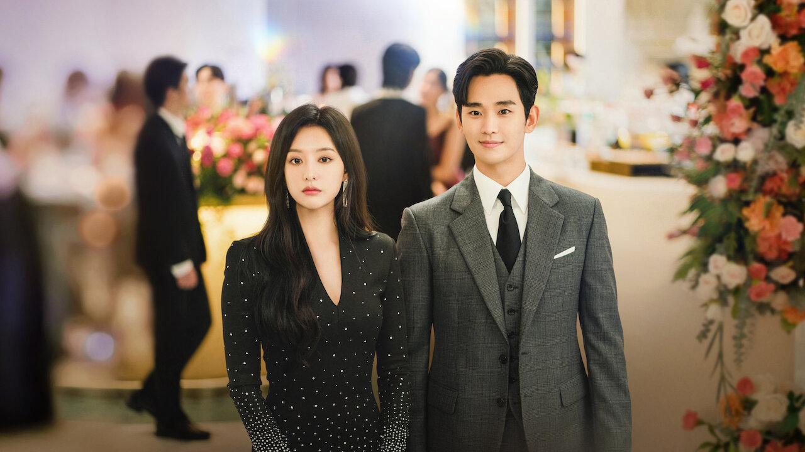
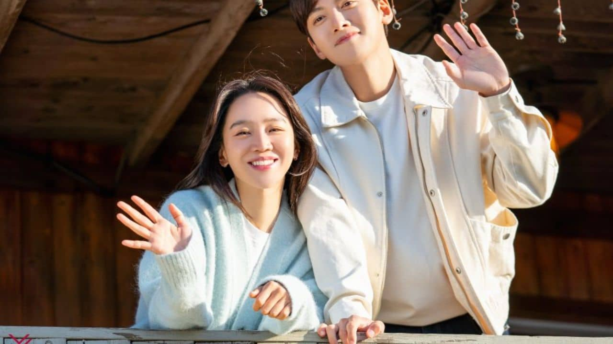

Ao longo dos episódios, os protagonistas percebem que ainda guardam carinho (e química) um pelo outro
e deixam seus sentimentos voltarem à tona. A história real que teria inspirado Rainha das Lágrimas,
ao menos parcialmente, é a de Lee Boo-jin, empresária herdeira da Samsung, e de seu ex-marido, Im
Woo-jae.
Leia mais

Após um escândalo, uma fotógrafa retorna à sua cidade natal e reencontra um amigo de infância,
reacendendo um antigo romance. A série conta a história de Sam-dal (Shin Hye-sun), que deixa a sua
pequena vila de pescadores para construir uma nova vida em Seul, a capital da Coreia do Sul.
Ao perder tudo, ela é forçada a voltar à sua cidade natal e, envergonhada, tenta não ser
No entanto, ela acaba reencontrando Yong-phil (Ji Chang-wook),
seu melhor amigo de
infância.
Leia mais

A série gira em torno do presidente narcisista de uma grande corporação, Lee Young-joon, e sua
altamente capacitada secretária, Kim Mi-so. Mal-entendidos surgem quando ela anuncia que vai
renunciar de sua posição, depois de trabalhar para Lee Young-joon por nove anos.
Leia mais